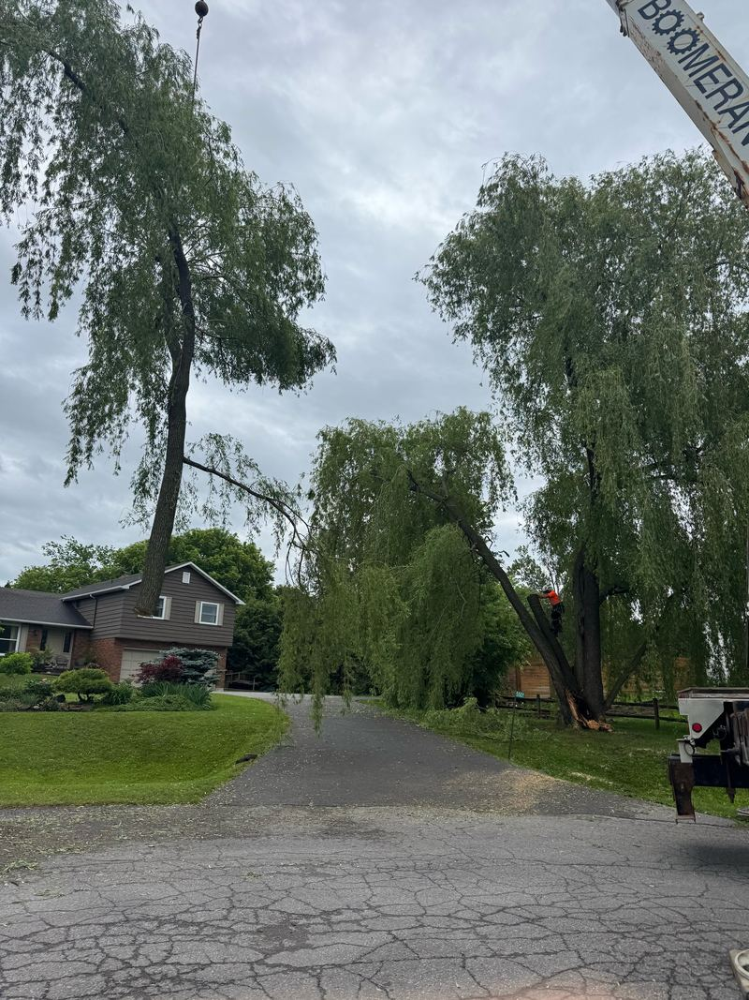

Bisson Services abat et enlève des arbres à Ottawa, dans Prescott-Russell et dans les environs, d'un seul arbre simple jusqu'aux abattages complexes sur plusieurs jours. Pour les arbres morts, mourants et dangereux, un service d'urgence 24 heures est offert. Un professionnel se rend chez vous pour une estimation gratuite et un plan d'action : appelez au (613) 558-4806.

Bisson Services peut vous aider à décider si un arbre doit être coupé ou enlevé. Les arbres trop près des maisons et autres bâtiments, ou les espèces plantées au mauvais endroit, sont des candidats à l'abattage. Ils représentent une menace lors des gros orages et sous la glace et la neige, et si l'un d'eux perd des branches ou tombe, il risque de causer des dommages coûteux.
Un arbre mal placé peut aussi endommager les fondations, soulever les trottoirs, causer de la moisissure sur le revêtement, frotter la peinture des bâtiments, boucher les gouttières de feuilles et offrir aux écureuils, fourmis et autres bestioles un chemin vers votre maison ou commerce.
Besoin de faire abattre et enlever un arbre, ou pas certain qu'il soit mort? L'abattage est un travail dangereux qui doit être confié à des abatteurs expérimentés et assurés. Pour qu'aucun dommage ne soit causé à votre propriété, laissez nos arboriculteurs expérimentés s'occuper de l'abattage et de l'enlèvement.
Qu'il s'agisse d'une coupe simple ou d'un abattage complexe sur plusieurs jours, un professionnel de Bisson Services vous rencontre sur place pour déterminer quels arbres doivent être abattus et planifier la meilleure façon de le faire. L'estimation est gratuite.
Pour les arbres matures près des maisons, des routes et des fils, Bisson fait travailler la grue, la chargeuse télescopique et le camion-nacelle en tandem, en abattant l'arbre par sections contrôlées et en descendant chaque morceau loin de la maison. Le travail à la grue et au camion-nacelle permet à Bisson de réaliser en toute sécurité des abattages gros et complexes.
Guide : Mon arbre est-il dangereux? Les signes à surveiller
Oui. Pour les arbres morts, mourants et dangereux, Bisson Services offre un service d'urgence 24 heures. Appelez au (613) 558-4806.
Lorsqu'il est mort ou mourant, qu'il nuit à d'autres arbres, qu'il est jugé dangereux, ou qu'il cause une obstruction que l'élagage ne peut pas corriger.
Oui. Un professionnel de Bisson Services visite la propriété, détermine avec vous quels arbres doivent être abattus et planifie le travail.
Estimation gratuite sur place, service bilingue, urgence 24 heures. Bisson vise à répondre le jour même.